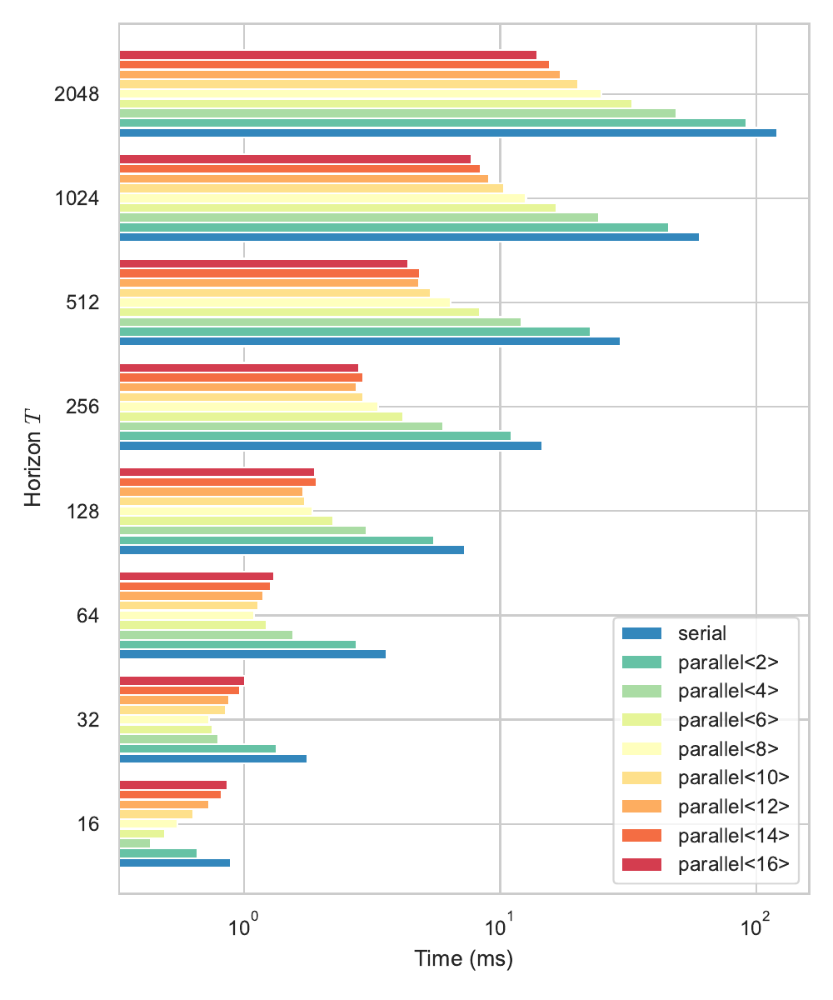

Abstract
Recent strides in nonlinear model predictive control (NMPC) underscore a dependence on numerical advancements to efficiently and accurately solve large-scale problems. Given the substantial number of variables characterizing typical whole-body optimal control (OC) problems —often numbering in the thousands— exploiting the sparse structure of the numerical problem becomes crucial to meet computational demands, typically in the range of a few milliseconds.
Addressing the linear-quadratic regulator (LQR) problem is a fundamental building block for computing Newton or Sequential Quadratic Programming (SQP) steps in direct optimal control methods. This paper concentrates on equality-constrained problems featuring implicit system dynamics and dual regularization, a characteristic of advanced interior-point or augmented Lagrangian solvers. Here, we introduce a parallel algorithm for solving an LQR problem with dual regularization. Leveraging a rewriting of the LQR recursion through block elimination, we first enhanced the efficiency of the serial algorithm and then subsequently generalized it to handle parametric problems. This extension enables us to split decision variables and solve multiple subproblems concurrently.
Our algorithm is implemented in our nonlinear numerical optimal control library aligator. It showcases improved performance over previous serial formulations and we validate its efficacy by deploying it in the model predictive control of a real quadruped robot.
Results
Whole-body NMPC on SOLO-12
Computational timings for P=2 threads
Computational timings for P=6 threads
Solving cyclic LQ problems
One of the side-effects of our formulation, is the ability to tackle linear-quadratic problems with cyclical constraints of the form \(G_0x_0 + G_Nx_N + g = 0\).
The following is a two-dimensional LQ problem over \(N = 20\) steps with no initial condition but a cyclical condition \(x_0 = x_N\), and some transient costs that steer the generated trajectory close to two points \(\bar{x}_5\) and \(\bar{x}_{15}\).

Synthetic benchmark on M1 Mac Studio Ultra
We solve an unconstrained LQ problem with the same dimensions as the SOLO-12 NMPC experiment.
